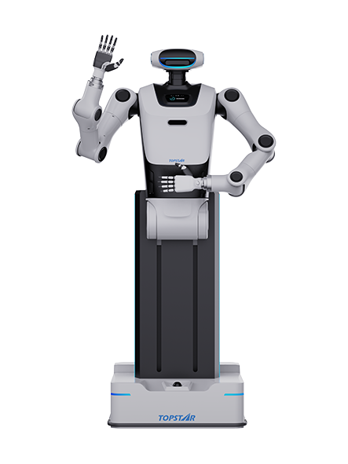

TWH020
A wheeled humanoid robot from China.
Sources retrieved: 6 October 2026 (A)
- Intended use, per the manufacturer
- Not stated
- Indicative price
- Not stated

Manufacturer's rendering.
Specifications
7 of 32 stated 25 not stated
25 fields hidden
How to read the figuresShow guideClose
- not statedNo source
- noStated by a source
- 0Reported as zero
- ASource
- A*Source with a caveat (select it)
- CERecords only what the manufacturer states regarding CE marking.
Select a source marker for source details and notes.
Physical4/13 disclosed
Power0/5 disclosed
Sensing and autonomy3/6 disclosed
Payload and expansion0/3 disclosed
Commercial0/1 disclosed
Compliance & certifications0/4 disclosed
Against the field
Each strip holds every robot of this type in the guide that states the figure, one bar per group of values. Further right means a larger figure, not a better robot. A taller bar means more robots in that group.
Degrees of freedom
21DoF
106 wheeled humanoids state degrees of freedom
73 state a higher figure, 22 a lower one. 4 more state exactly the same figure. 6 state only a bound (≥ or ≤) and are not ranked.
Max speed
5.4km/h3.36mphOur conversion from 1.5 m/s. The manufacturer does not state an imperial figure itself, so the conversion has no source of its own.
103 wheeled humanoids state a top speed
17 state a higher figure, 33 a lower one. 32 more state exactly the same figure. 5 state a range that includes this figure. 15 state only a bound (≥ or ≤) and are not ranked.
Notes
Topstar calls TWH020 a wheeled humanoid robot; the product name is Xiao Tuo.
Four steering wheels give 360° omnidirectional movement, and the waist can lift and pitch.
The waist lifts through 0 to 550 mm.
The producer gives an arm working radius of 690 mm.
The battery can be swapped quickly, and the robot can return to charge by itself.
Sources
One line per source, not per figure: a source has one retrieval date.
- Atopstarltd.com/lang-cn/productview/2239.htmlMain source. Retrieved 6 October 2026